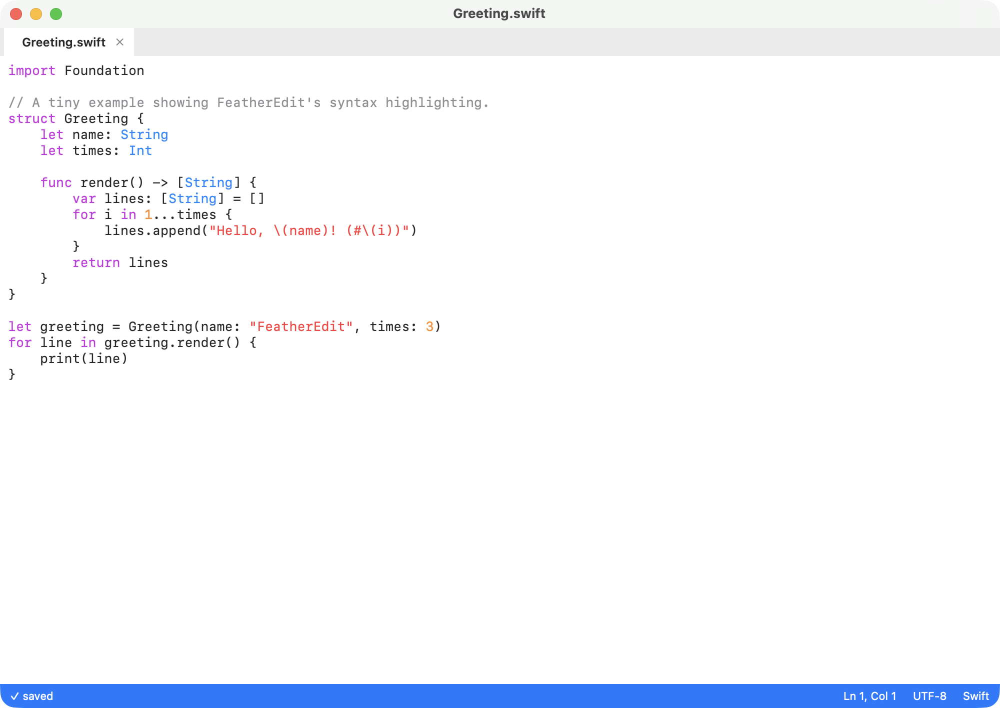

2026-11-17
Version 1.1.0 added tab drag-and-drop between windows with a live tear-off window, and a Format JSON context-menu item that preserves key order. Text changed programmatically is now re-highlighted correctly.
A lightweight, native macOS text editor — a little sibling of VS Code for opening a file, making small edits, and saving it.
FeatherEdit is built in Swift and AppKit with no storyboards, so everything is plain code. It is deliberately not a project editor.

FeatherEdit requires macOS 13 or later. Install the latest release with Homebrew:
brew tap kdekorte/featheredit https://github.com/kdekorte/FeatherEdit
brew trust kdekorte/featheredit
brew install --cask kdekorte/featheredit/feathereditYou can also download FeatherEdit-<version>.zip from the releases page and drag FeatherEdit.app to /Applications.
Once it's installed, open a file from the command line:
open -a FeatherEdit file.txtFiles are read and written as UTF-8, and the highlighter re-colors the whole file on every edit, so FeatherEdit is best suited to small files.
2026-11-17
Version 1.1.0 added tab drag-and-drop between windows with a live tear-off window, and a Format JSON context-menu item that preserves key order. Text changed programmatically is now re-highlighted correctly.
2026-11-14
Added VS Code-style Find and Replace, a split editor, and a File ▸ Open Recent menu. The status bar now follows the macOS accent color, and a setting controls whether the sidebar shows on launch.
2026-11-13
Released 1.0.0 with the MIT license, a technical spec, and a Homebrew cask. Version 1.0.1 fixed files opened through Finder's Open With not loading.